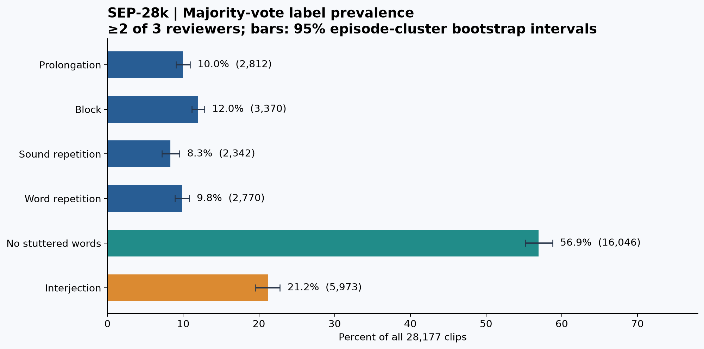
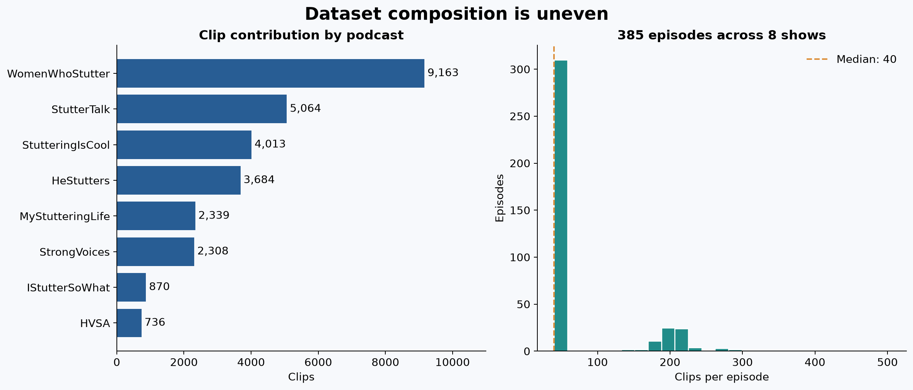
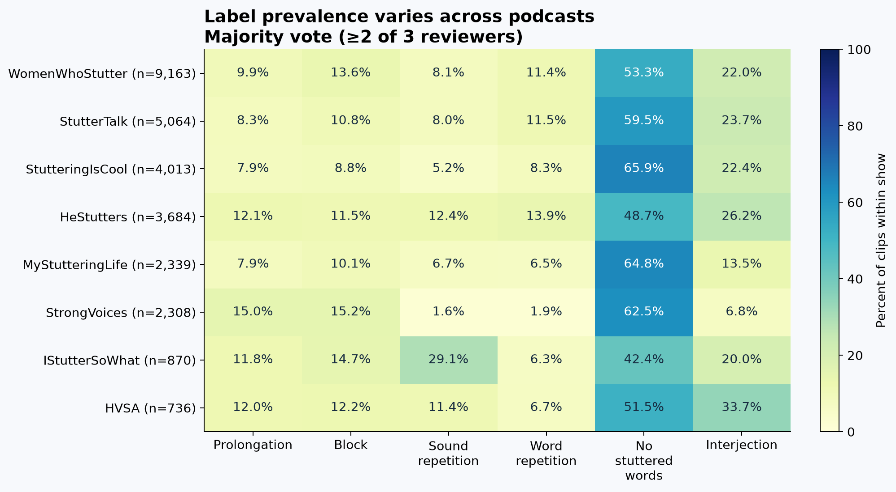
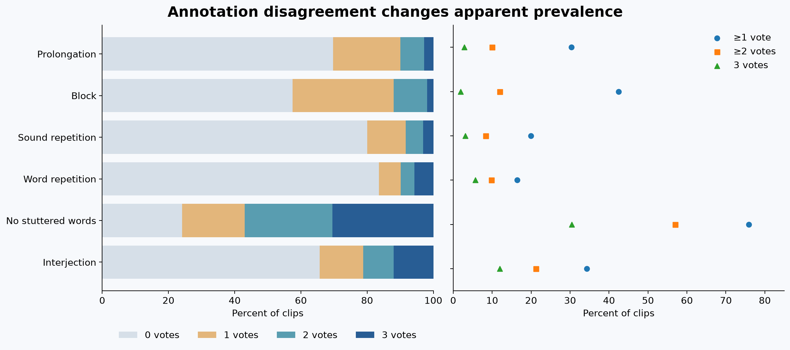
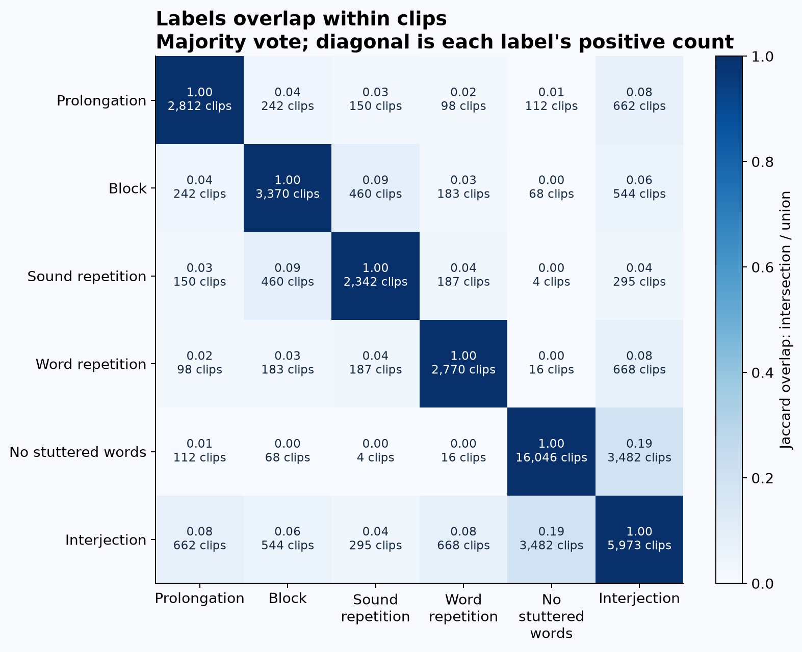
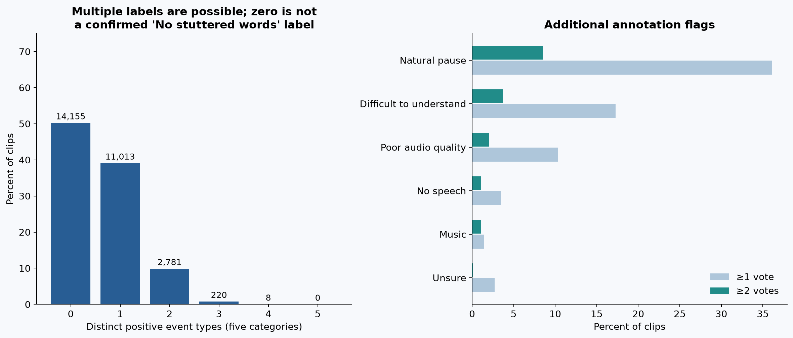

28,177 clips · 385 episodes · 8 shows · 23.48 hours. Labels represent reviewer votes, not event counts. Main threshold: ≥2 of 3 votes.
Full report · Download all plots (PDF) · Statistics (CSV)





